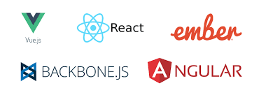

Un framework front-end es una herramienta que se integra con nuestro proyecto web para conseguir que el desarrollo front-end,interfaz, animaciones sea más fácil, rápido y robusto; convirtiéndolo en una herramienta muy útil para desarrolladores principiantes y programadores con poco tiempo y poca experiencia en ámbitos de diseño.

LOS 5 MEJORES:
- Bootstrap :Se ejecuta en la plataforma web y soporta las versiones más recientes de todos los navegadores populares, incluyendo navegadores predeterminados en dispositivos móviles.Tiene código abierto, y su gran documentación ayuda a facilitar la curva de aprendizaje.
- React :Actualmente el número uno entre todos los frameworks frontend JavaScript. Trata con el DOM virtual y es veloz al realizar actualicaciones.
-
Vue.JS :Es es extremadamente ligero los archivos de descarga solo pesan unos veinte kilobytes, el sistema es increíblemente rápido y flexible,fácil de aprender y de extender usando varias librerías y herramientas.Según Snyk, se descargó más de cuarenta millones de veces el año pasado.
-
Angular :Fue creado por ingenieros de Google y el soporte de un gigante de la industria siempre te hace ver más confiable.Actualmente,actualmente la 8.0 versión es la más reciente, pero se está hablando de que un nuevo lanzamiento de la versión 9.0 ya ha comenzado.
-
Bulma:Css :Es un framework nuevo,fue lanzado en el 2016,su versión más reciente es la 0.8.0, la cual introduce actualizaciones de color, controles de forma más grandes y personalización de color del panel de elementos. consiste solo de clases CSS, por lo que no necesitarás de conocimiento en JavaScript para comenzar a usarlo.Contiene más de treinta archivos SASS (Syntactically Awesome Stylesheets).Prioriza el diseño web responsivo.
Volver a Pagina principal